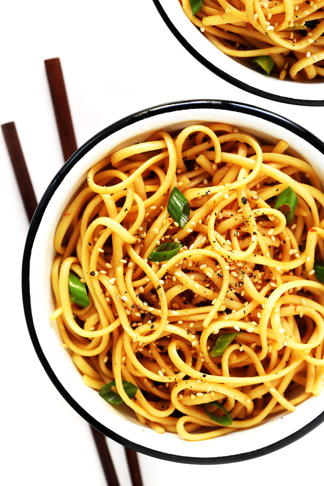
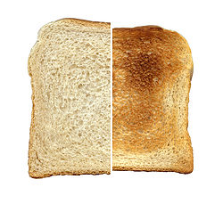

| Ingredients | Quantity |
|---|---|
| Cheese | 1 |
| Buns | 2 |
| Patty | 1 |
Step 1: Cook the patty
Step 2: Place patty on bun
Step 3: Place cheese on patty
Step 4: Place bun on cheese & patty
Step 5: Eat

| Ingredients | Quantity |
|---|---|
| Noodles | 1 Pack |
| Water | 2 Cups |
Step 1: Poor 2 cups of water into pot
Step 2: Wait until water is boiling, then put in noodle block
Step 3: Wait 3 min while noodle block cooks, then mix in the flavor packet
Step 4: Pour noodles into bowl
Step 5: Eat
| Ingredients | Quantity |
|---|---|
| Bread | 1 |
| Toaster | 1 |
Step 1: Put bread in toaster
Step 2: Wait until bread becomes toast
Step 3: Take out toast of toaster
Step 4: Eat
Source: Totaly Legit Food Video